Project Report
2022 World Cup Data Analysis: Uncovering Modern Football Trends
1. 서론 (Introduction)
1.1 연구 배경 및 필요성
여러 스포츠에서 데이터 분석의 중요성은 나날이 증가하고 있다. 대부분의 팀들은 분석을 통해 상대 팀의 전략을 파악하고 경기에 나선다. 전략 분석 분야에서 직관에만 의존하던 과거의 방식에서 벗어나 데이터를 통해 체계적인 접근이 가능해졌다. 또한 축구에는 전술의 흐름이 존재한다. 유행을 분석함으로써 현대 축구의 방향성을 확인할 수 있다. 이러한 현대 축구의 방향성을 통해 앞으로의 축구 전술 시스템의 발전에 도움을 주기 위해 연구를 진행하려 한다.
1.2 연구 목표
본 연구를 통해서 현대 축구의 흐름을 파악하려 한다. 데이터의 출처를 2022년 카타르 월드컵으로 지정하였다. 월드컵은 다양한 대륙 팀들의 참여하기에 국가, 대륙에 제한되지 않고 현대 축구 흐름을 파악하는 데 용이하다. 카타르 월드컵의 모든 경기를 통해 얻은 지표와 각 국가가 월드컵에서 기록한 성적을 활용해 전체적인 특징과 각 군집 별 특징을 알아내려 한다. 데이터는 총 37개의 특성으로 구성되어 있으며 공격 관련 지표, 수비 관련 지표로 구성되어 있다.
1.3 연구 방법론 개요
데이터는 FIFA 공식 홈페이지의 2022년 카타르 월드컵 자료를 사용하였다. 조별예선 경기부터 결승전까지의 모든 자료를 바탕으로 각 팀들에 대한 지표를 정리하였다. 그 후, Z-score 표준화 기법 및 UMAP(Uniform Manifold Approximation and Projection) 차원 축소 기법을 활용해 데이터를 전처리한 후 얻은 데이터를 통해 군집화를 진행하였다. 군집화 알고리즘으로는 빠른 연산과 시각화에 유용한 K-means 군집화 알고리즘을 사용하였다. Elbow Method와 Silhouette score를 활용하여 알고리즘을 평가하고 최적의 K 값을 찾아내었다.
2. 연구 방법
2.1 데이터 소개
FIFA 공식 홈페이지의 2022년 카타르 월드컵 자료를 사용한다. 카타르 월드컵의 조별예선 경기부터 결승전 경기까지의 총 63경기를 포함하고 있다. 각 경기마다 팀 별로 지표가 정리되어 있다. 경기마다 팀 당 37개의 특성을 구할 수 있으며 특성 별로 팀의 모든 지표를 평균치를 내어 최종적인 데이터를 생성하였다.
2.2 데이터 전처리
주어진 데이터에 Z-score 기법을 적용하여 평균이 1이고 표준편차가
0인 데이터로 표준화하였다. 데이터의 특성 값 간 척도를 일치시켜
이후 실행할 차원 축소 및 군집화 모델의 안정성을 확보하였다. 이후,
UMAP 기법을 사용하여 차원 축소를 진행하였다. 데이터가 비선형적이기
때문에 UMAP 기법을 활용해 특성의 수를 37개에서 2개로 축소하였다.
UMAP 기법의 하이퍼 파라미터는 n_neighbors=15,
min_dist=0.1로 설정하여 데이터의 전역적인 구조 정보를
잘 보존하도록 하였다.
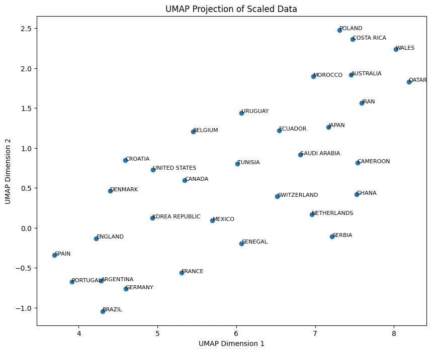
2.3 특성 간 상관관계 확인
각 국가마다 카타르 월드컵에서 거둔 성적을 기준으로 Rank Score 특성을 추가하여 다른 특성과의 상관 관계를 확인하였다. 월드컵에서 좋은 성과를 거두기 위해서는 어떤 특성이 중요한 지 확인하기 위해 시각화를 진행하였다.
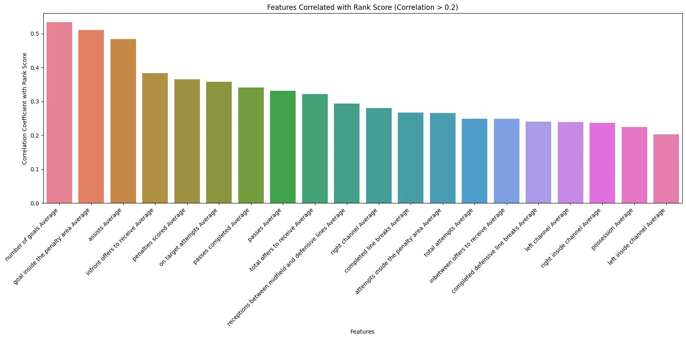
2.4 군집화 알고리즘
군집화 알고리즘으로는 빠른 연산이 가능하며 군집화의 결과를 시각적으로 확인하기에 유리한 K-means 알고리즘을 선택하였다. 노이즈에 취약하다는 단점이 있지만 앞서 실행한 데이터 전처리 과정에서 노이즈가 없음을 알 수 있었기에 문제가 되지 않았다. 알고리즘의 빠른 실행을 위해 초깃값 선정 방식으로 k-means++를 선택하였다.
2.5 군집 수 결정 방법
최적의 군집의 개수를 찾기 위해 Elbow Method와 Silhouette Score를 활용하여 시각화 및 비교 작업을 진행하였다. 먼저 Elbow Method를 진행했을 때는 최적의 군집의 개수은 2로 예상되었다. 이후 군집의 개수마다 평균 Silhouette Score를 구한 후 각 군집 별로의 Silhouette Score와 비교 작업을 진행하였다. 군집의 개수가 6일 때 평균 Silhouette Score는 0.434이며 각 군집의 Silhouette Score도 대부분 균일한 것으로 나타났다. 따라서 최적의 군집의 개수는 6으로 결정하였다.
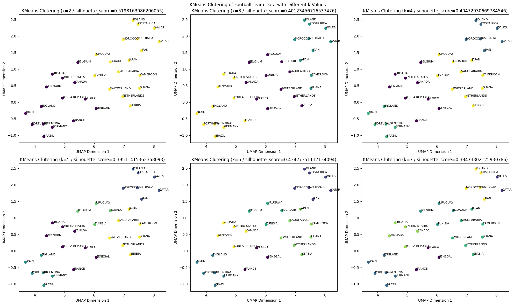
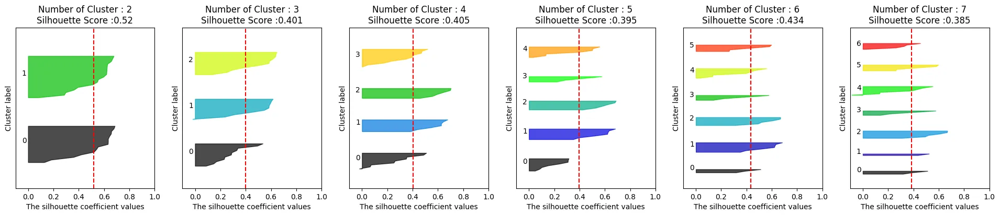
3. 연구 결과
3.1 특성 간 상관관계 분석 결과
Rank Score 특성과 다른 특성 간의 상관 관계를 계산하였다.
infront offers to receive Average는 0.382850,
total offers to receive Average는 0.321767,
inbetween offers to receive Average는 0.248061를
기록하였다. 따라서 공을 받기 위한 움직임 및 시도가 중요하며 특히
높은 위치에서 받기 위해 움직임을 가져가야 한다는 것을 확인할 수
있었다.
또한 receptions between midfield and defensive lines
Average 특성이 0.293273을 기록하였고 이는 상대의 미드필더와
수비수 사이에서 공을 받는 행위의 중요성을 알려준다.
left channel Average는 0.238437,
right channel Average는 0.280012로 측정되었으며 이를
통해 중앙 지역보다는 측면 공간을 활용하는 것이 중요하다는 것을
파악할 수 있었다.
3.2 군집화 결과
각 군집 별로의 특징을 알기 위해 각 군집의 특성의 평균 및 표준편차를 errorbar를 활용하여 시각화 하였다. 카타르 월드컵의 우승팀인 아르헨티나를 포함하여 축구 강대국인 브라질, 잉글랜드, 독일, 포르투갈, 스페인으로 구성된 2번 군집이 대다수의 특성에서 높은 수치를 기록하였다. 또한 평균적으로 거둔 성적 또한 우수했다. 준우승 국가인 프랑스가 포함된 0번 군집은 대부분의 특성에서 우월한 수치를 기록하지 못하였다. 1번 군집은 대부분의 특성에서 가장 낮은 수치를 기록하였지만 3번, 4번 군집보다 우수한 성적을 거두었다. 3번 군집은 높은 실점률을 보이며 가장 낮은 성적을 기록하였다.
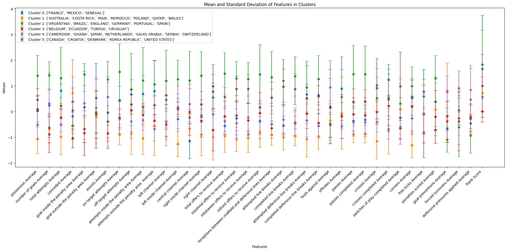
3.3 군집별 팀 스타일 분석
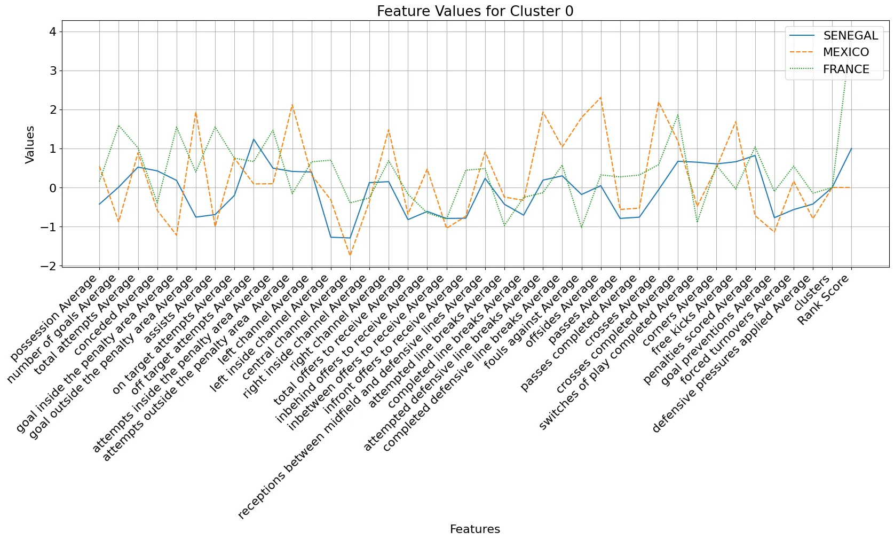
준우승 국가인 프랑스가 포함되어 있는 0번 군집은 패스 횟수와
성공률에 비해 침투 관련 지표인 attempted defensive line
breaks Average, completed defensive line breaks
Average, offsides Average 수치가 높다. 또한
central channel Average의 수치가 낮고
right channel Average, left channel Average
수치는 높아 중앙 공간이 아닌 측면 공간을 주로 이용했음을 파악할
수 있다. 이를 통해 짧은 패스를 통해 경기를 풀어나가기보다는
수비의 뒷공간을 직접적으로 노리는 직선적인 운영을 했음을 파악할
수 있다.
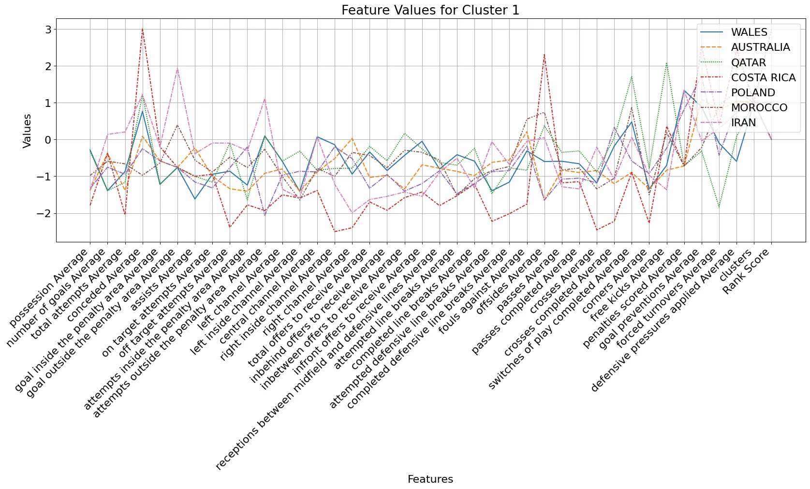
1번 군집은 대부분의 수치가 낮지만 3번, 4번 군집에 비해 우수한
성적을 거두었다. 대부분의 수치가 낮았음에도
goal preventions Average, forced turnovers
Average, defensive pressures applied Average
수치가 높게 기록되었다. 또한 switches of play completed
Average가 높으며 이는 상대 수비의 균열을 유도했음을
의미한다. 전체적으로 수비적인 부분에서 좋은 모습을 보였고 이것이
좋은 성과로 이끌었다는 결론을 얻을 수 있다.
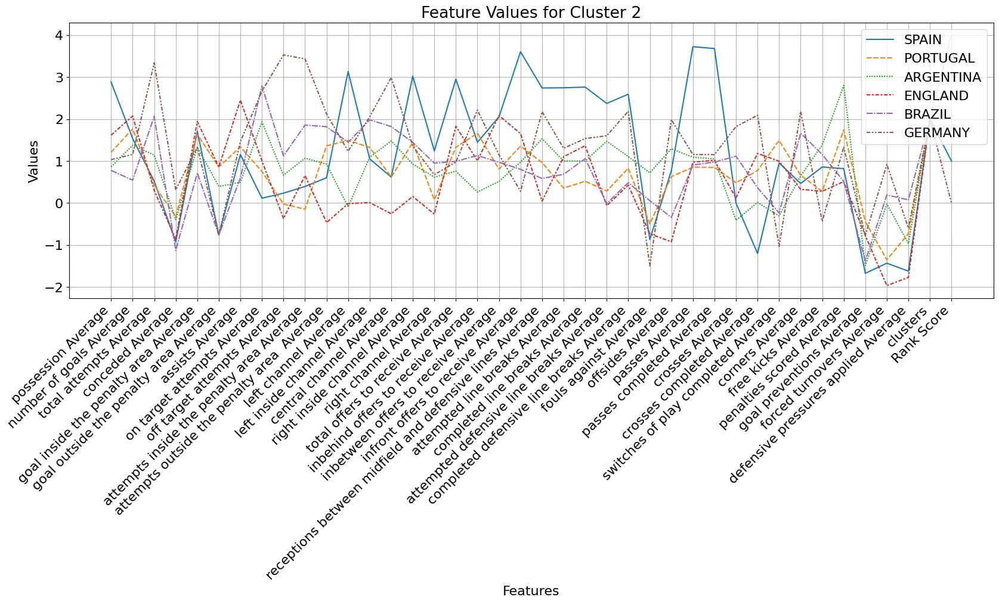
축구 강대국만으로 구성된 2번 군집은 대부분의 수치에서 가장 우월한
모습을 보인다. 압도적인 점유율, 패스 횟수와 패스 성공률 수치를
확인할 수 있다. 또한 left inside channel Average,
central channel Average, right inside channel
Average의 값이 높음을 통해 중앙 지역에서 좋은 경기력을
보였음을 유추할 수 있다. 중앙 지역의 장악을 바탕으로 높은 유효 슛
수치와 이를 통해 많은 득점을 기록하였다.
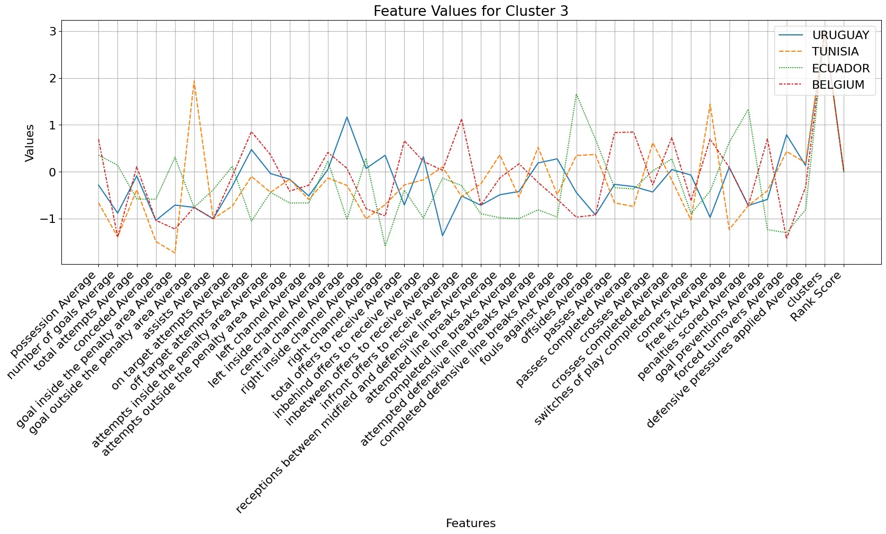
가장 낮은 성적을 기록한 3번 군집은 다른 군집에 비해 공격, 수비에서 모두 특출난 수치를 기록하지 못하였다. 가장 낮은 득점 수치를 보였으며 수비적인 부분에서도 좋지 못한 수치를 보인다. 불안한 수비력과 확실하지 못한 공격이 낮은 성적을 기록한 주요한 원인으로 파악된다.
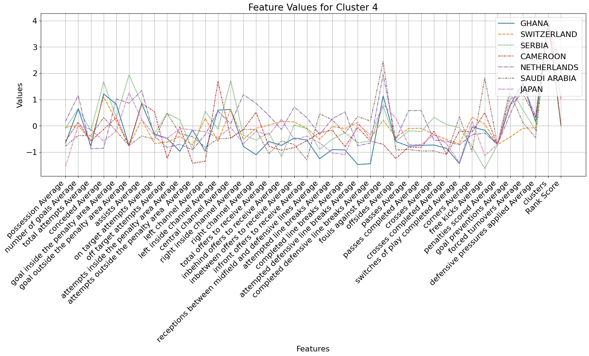
4번 군집은 낮은 점유율, 적은 패스 횟수와 성공률과 같이 대부분의
수치에서 낮은 모습을 보인다. 그러나 goal inside the penalty
area Average 수치는 높은데, 이를 통해 경기력은 좋지 못하지만
박스 안 결정력을 통해 적은 기회에도 득점을 기록하는 능력을
보여준다. 공격 관련 지표에 비해 수비 관련 지표에서는 좋은 수치를
보여준다.
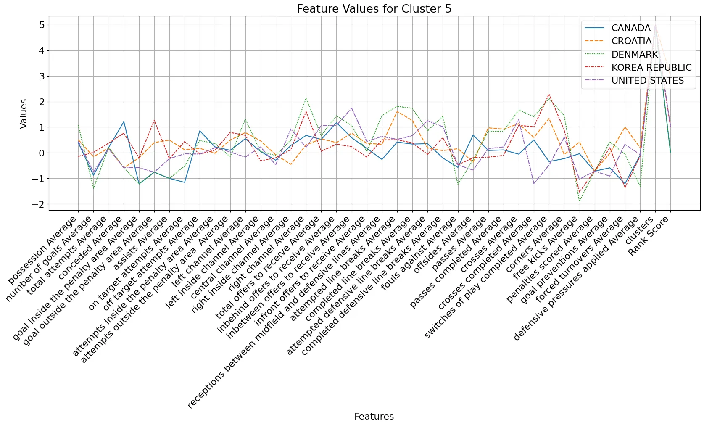
5번 군집은 여러 지표에서 가장 우수한 성적을 거둔 2번 군집 다음으로
좋은 수치를 기록했다. 특히 switches of play completed
Average 특성에서 가장 높은 수치를 보인다. 이는 전체적으로
좋은 경기력을 기반으로 하여 상대 수비의 균열을 유도하였음을
의미한다. 패스, 침투 관련 지표가 높지만 중앙보다는 측면 공간을
주로 활용하였다. 다만 crosses completed Average 수치는
낮게 기록되었고 득점력도 저조하였다.
4. 결론
위 연구로 측면 공간의 활용이 중요하다는 점을 파악할 수 있다. 기존의 축구 강대국을 제외하고 대부분의 국가에서는 측면 활용을 중요시했고 이는 좋은 성과로 이어졌다. 특히나 전방으로 침투하는 움직임과 측면 활용의 결합이 좋은 성과를 거두는 주요한 원인으로 파악된다. 기본적인 수비력을 바탕으로 하며 볼을 소유하는 것에 집중하지 않고 경기장의 측면 구역을 어떻게 효과적으로 사용할 것인지 정하는 것이 중요하다.
또한 경기장 내에서 선수들이 서로 자리를 옮겨 가며 유기적으로 움직일수록 좋은 성과를 거둘 수 있다. 따라서 대부분의 국가들은 측면의 공간과 지속적인 침투를 활용하는 모습을 보인다. 개인기량이 뛰어난 선수들로 구성된 축구 강대국은 여전히 점유율과 중앙 지역을 통제하는 것에 집중하고 있다.
활용한 데이터의 총 37개의 특성 중 공격 관련 지표는 33개, 수비 관련 지표는 4개이다. 공격 관련 지표에 비해 수비 관련 지표가 부족하였고 이는 데이터의 불균형을 초래했다. 수비의 중요성이 강조되는 현대 축구에서 이는 분석에 치명적인 영향을 미쳤다. 또한 지표로 나타내기 힘든 개인 기량 혹은 감독의 역량 등에 대한 지표는 분석에 포함되지 않았다.